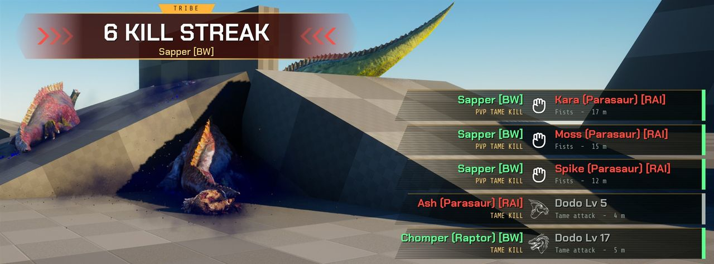
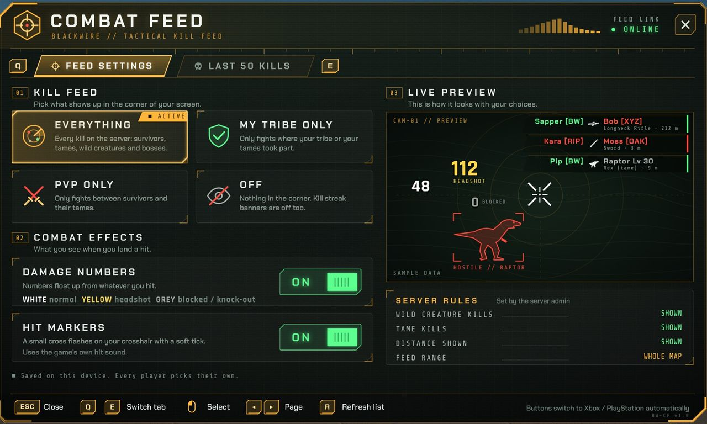
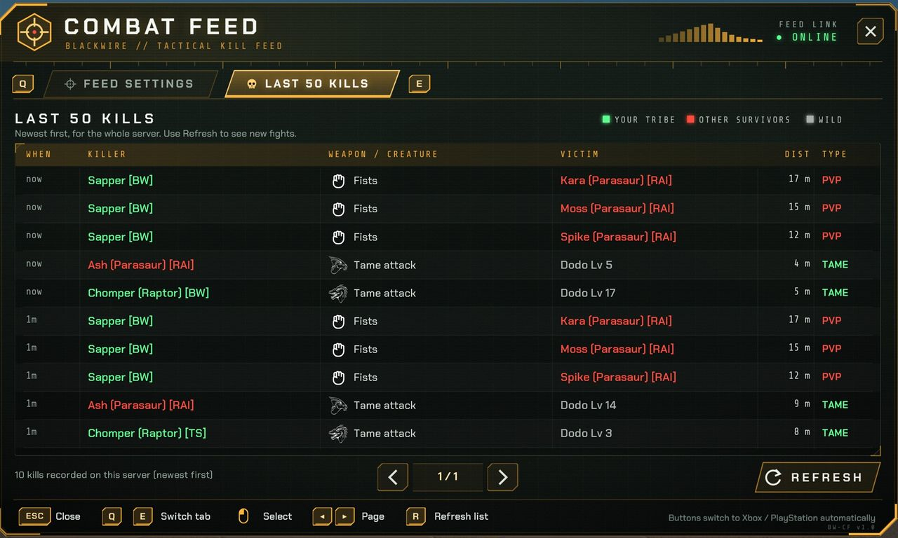
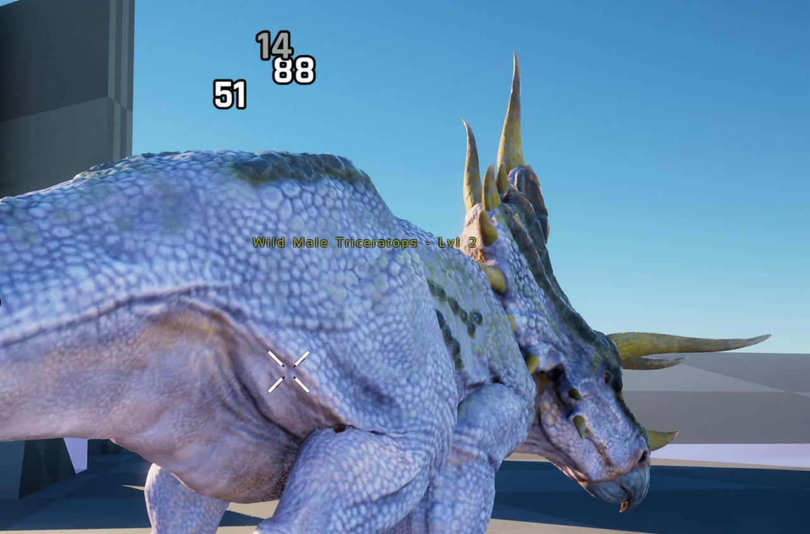

All mods
mods / events_pvp
BlackWire Combat Feed.
Kill feed, kill streaks, damage numbers and hit markers for every fight. No setup needed.
Works onPC · Xbox · PlayStation
ServersSingle player · Dedicated
CategoryEvents & PvP
SetupOptional INI
01 · what_it_does
What it does.
- A kill feed in the top right with the weapon or creature, the distance and tribe colours.
- Kill streak banners your whole tribe sees from 3 kills in a row.
- Floating damage numbers, with headshots in yellow. Only you see your own.
- Hit markers on your crosshair when you land a hit.
- The last 50 kills on the server in one window.
- You pick what shows, and your choices are saved on your own device.
02 · full_guide
How it works.
Numbers are the defaults. Server owners can change them in the settings below.
What you see
Craft the [BW] Combat Feed Settings item (level 1) and use it to pick what shows. Your choices are saved on your own device.
| Part | What it shows |
|---|
| Kill feed | Top right: the weapon or creature, the distance and tribe colours |
| Kill streaks | A banner your whole tribe sees from 3 kills in a row |
| Damage numbers | Floating numbers with headshots in yellow. Only you see your own. |
| Hit markers | A mark on your crosshair when you land a hit |
| Last 50 kills | The last 50 kills on the server in one window |
No setup
Works on PvE and PvP servers as soon as it is added.
Owner choices
Show or hide wild and tame kills and the distance, and limit the feed to survivors near the kill.
03 · how_to_use
How to use it.
Craft the [BW] Combat Feed Settings item (level 1) and use it to set your options.
04 · in_game
In game.

Kill feed
Settings
Last 50 kills
Damage numbers05 · server_settings
Server settings.
Every line is optional. Change what you want and copy the block into GameUserSettings.ini.
Settings 1 settings
General 3 settings
06 · spawn_codes
Spawn codes.
For admins, in the console.
[BW] Combat Feed Settingscheat giveitem "Blueprint'/BlackWire_CombatFeed/PrimalItem_BWCF_Settings.PrimalItem_BWCF_Settings'" 1 0 0
 BLACKWIRE
BLACKWIRE